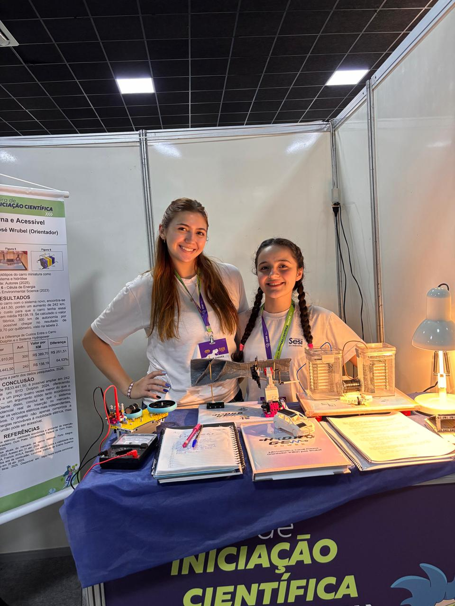
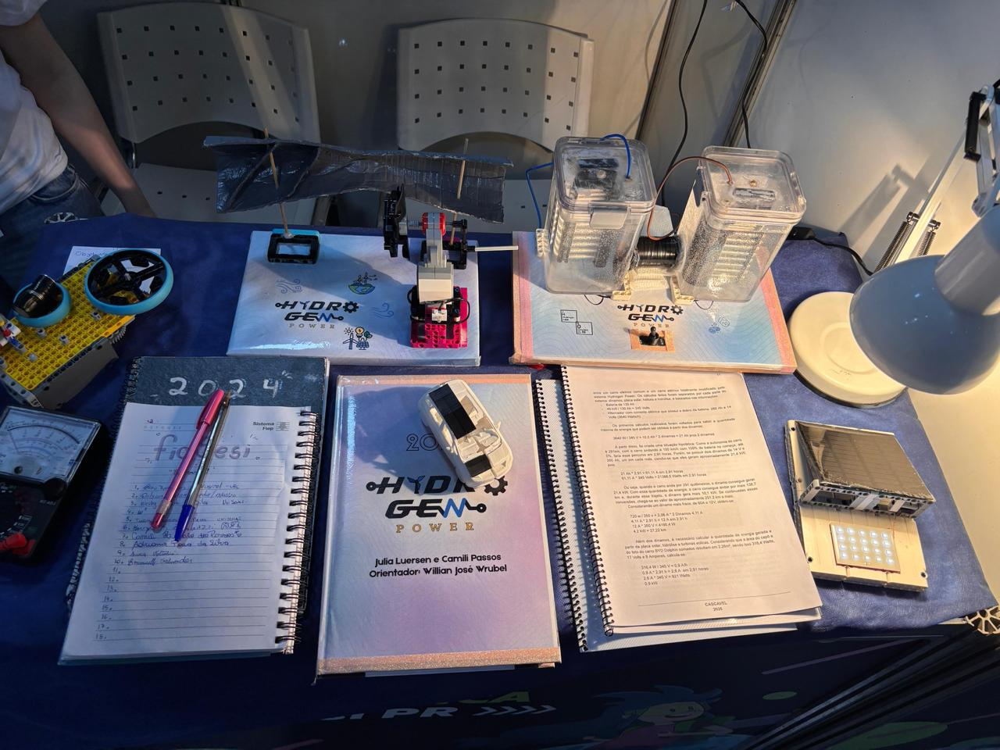
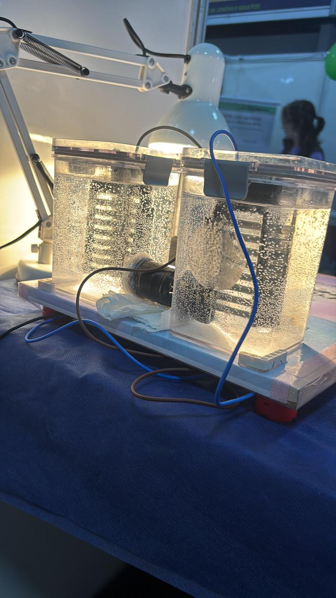
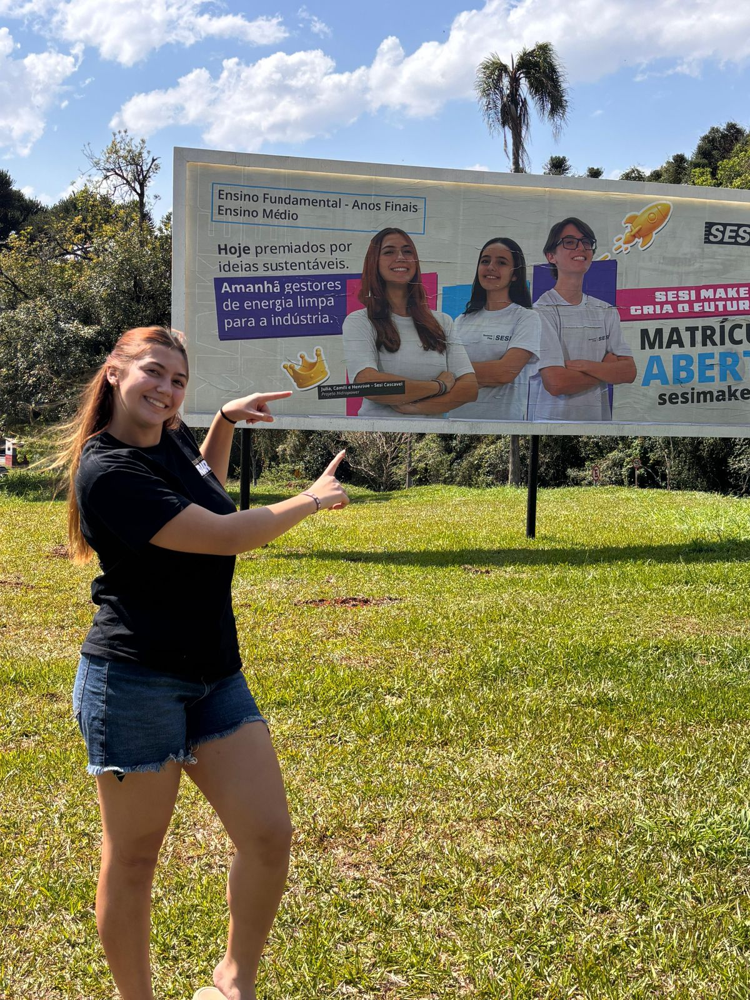

HydroGen Power: Modern and Accessible Sustainability
During two years, I breathed science. The HydroGen Power project introduced me to the electrical engineering world. The project aims to extend the battery life of electric cars with four types of renewable energy sources: wind turbines, dynamos, hydrolysis and solar panels. Understanding the energy sources and its functionalities, with my project partner, we did prototypes of each one and calculated the approximate amount of energy it could generate, which is around 80% more than the original BYD Dolphin's autonomy and 65% cheaper.


While developing the project, I improved skills like team work, logical thinking and calculus. HydroGen Power opened a new world of opportunities for me: I went to a lot of science fairs, met new people and learned more about physics and electricity too, guiding me to what later became my dream school: electrical engineering.


Also, with our math teacher and project advisor, we went to a lot of science fairs through the two years of the project. His mentorship made every moment look lighter, showing that science doesn't need to be so serious and it feels better with good people around.